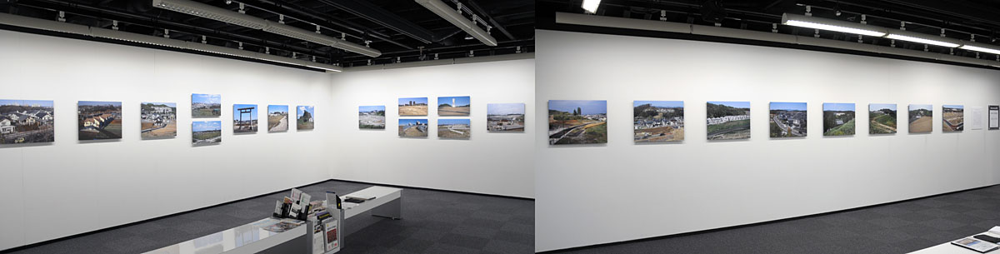

Profile
KONDO Kazuhiro
Programmer ∨ Photographer
個展：
２０２４年５月８日〜２６日 ヨロコビtoカフェ 「square aggregation」
２０１２年５月１日〜７日 ニコンサロンbis新宿 「八王子ニューランド２１」
カメラ雑誌 月例フォトコンテストなど：
「日本カメラ」２００８年度 月例フォトコンテスト 年度賞６位（カラープリント部門）
「日本カメラ」２００７年度 月例フォトコンテスト 年度賞９位（カラースライド部門）
「月刊カメラマン」２００３年度 カメラマン大賞で三席
「月刊カメラマン」１９９３年度 カメラマン大賞で大賞
その他、アサヒカメラ、フォトテクニック、CAPA、各誌月例フォトコンテストなどで作品掲載
HOME
|
PHOTO INDEX
